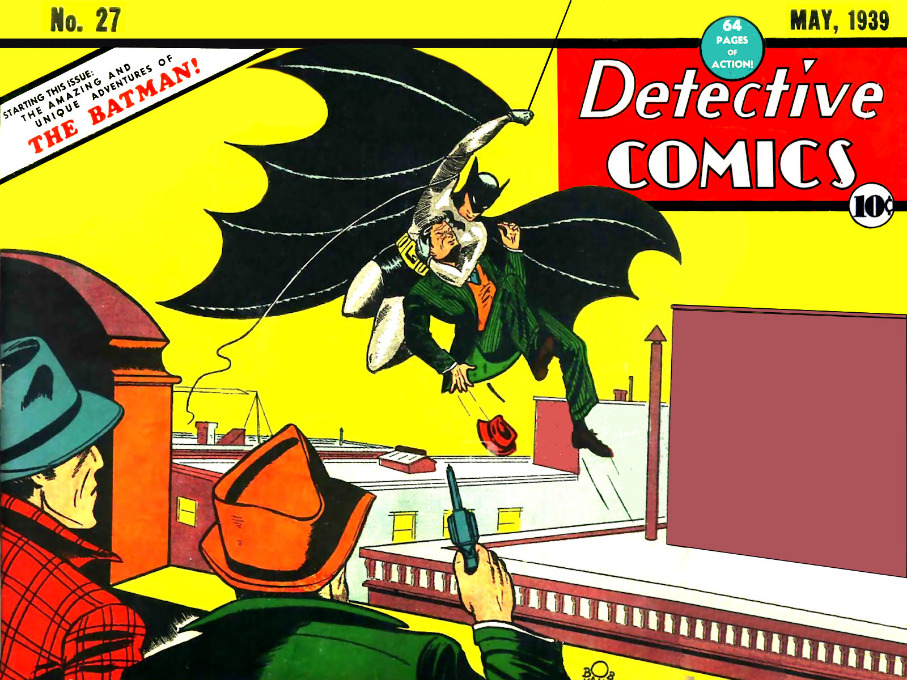

Batman is a fictional superhero appearing in American comic books published by DC Comics. Created by artist Bob Kane and writer Bill Finger, the character first appeared in Detective Comics #27, in 1939. Unlike many superheroes, Batman does not possess any superpowers. He relies on his intellect, detective skills, technology, and physical prowess to fight crime. His secret identity is Bruce Wayne, a wealthy businessman living in Gotham City.
